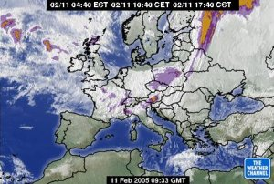

| Vreme - 11.2.2005 | |
|---|---|
| Vremenska slika  Nad vzhodno in južno Evropo je območje visokega zračnega pritiska, nad severnim Atlantikom in Skandinavijo pa območje nizkega zračnega pritiska. Hladna fronta je nad srednjo Evropo. Z zahodnimi vetrovi doteka nad naše kraje toplejši in v višinah precej vlažen zrak. |
Napoved za Slovenijo
Danes in jutri bo pretežno oblačno, jutri bo na Primorskem in
Notranjskem ponekod tudi megleno. Jutri popoldne bo lahko predvsem
v hribovitem delu zahodne Slovenije rahlo rosilo ali deževalo.
Jutri bo zapihal jugozahodni veter.
Najnižje jutranje temperature bodo od -3 do 3, najvišje dnevne danes od 1 do 6, na Primorskem do 9, jutri od 4 do 10oC. Napoved za sosednje pokrajine V sosednjih pokrajinah bo danes in jutri pretežno oblačno. Manjše padavine se bodo pojavljale predvsem severno od naših krajev. Jutri bo zapihal jugozahodni veter. |
| Več o vremenu | |